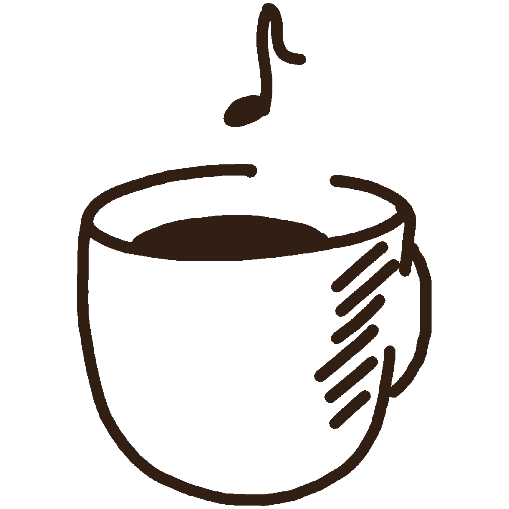

2024 – now
Bachelor — CPES Data Science, Arts & Cultures
Selective, multidisciplinary curriculum in Mathematics, Data Science, Algorithmics, and Cultural Sciences.

About Me
Undergraduate data science student at the CPES Data Science, Arts and Cultures bachelor of Paris Sciences et Lettres – PSL University with a strong interest in Natural Language Processing,
Optical Character Recognition, Automatic Speech Recognition, as well as their application to history,
archaeology, geopolitics or cultural studies.
I aim to specialize in quantitative modeling and analysis of low-resource languages
and Arabic dialects, while remaining open to new experiences.
Selective, multidisciplinary curriculum in Mathematics, Data Science, Algorithmics, and Cultural Sciences.
Highly selective French preparatory program focused on Mathematics, Physics, and Computer Science.
Graduated with Highest Honors.
Codicology and manuscript analysis using Handwritten Text Recognition methods and data collection of 15th-century Arabic and Aljamiado manuscripts.
This internship was an opportunity for me to work on pre-treatment optimisation with python and data collection thanks to eScriptorium and Kraken HTR models,
while learnin about research metodology.
Supervisors: Riham Mokrani & Prof. Nurilla de Castilla
Promoting Arab cultures and dialogue through films, concerts, debates, and other events such as United Nation simulations or meetings with researchers in collaboration with iReMMO.
Coordinating team efforts, planning student events, and mentoring first-year students.
Promoting Tunisian culture and debates through meetings, conferences and multimedia content. Edited video content, including interviews with historians and journalists such as Sophie Bessis.
Provided support in mathematics, physics, and informatics to other high school students.
Proceedings of the 4th Workshop on Open-Source Arabic Corpora and Processing Tools, pages 9-15, Wissam Antoun et al.
Chihiro Taguchi, Yusuke Sakai, Parisa Haghani, David Chiang, pages 9-15
Ibn Khaldoun, 1377
Self-taught Ney and Oud. Oboe at conservatory
Third-cycle music
theory with highest honors
Composition on MuseScore
Road cycling in a club